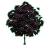
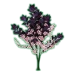

Vérlevelű juhar

Mélybordó, egész nyáron át díszítő lombjával azonnal a kerted leglátványosabb fókuszpontjává válik. Rendkívül ellenálló és könnyen nevelhető díszfa, amely elegáns megjelenésével bármilyen udvarba prémium hangulatot varázsol.
Vérszilva

Mélybordó, egész nyáron át díszítő lombjával azonnal a kerted leglátványosabb fókuszpontjává válik. Rendkívül ellenálló és könnyen nevelhető díszfa, amely elegáns megjelenésével bármilyen udvarba prémium hangulatot varázsol.
Kajszibarack

Élvezd a saját kertedből szüretelt, napérlelte és mézédes gyümölcsök utánozhatatlan ízét minden nyáron. Bőtermő, megbízható fajta, amelyből a legfinomabb házi lekvárok és sütemények készülhetnek.